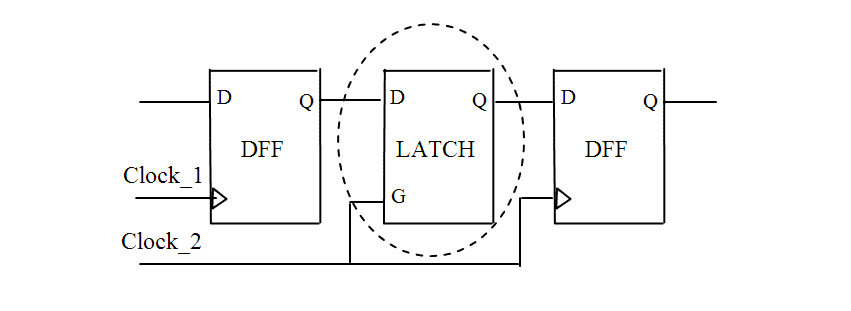

| Description | When a scan path crosses clock domains, using a lookup latch is the only solution that preserves scan path consistency and avoids the loss of some flip-flops in the scan chain. |
| Policy | DESIGN |
| Ruleset | DFT |
| Language | VHDL/Verilog |
| Type | Hardware |
| Severity | Error |
This is an example of valid Verilog code, followed by a circuit diagram that illustrates the correct approach:
module ntl_dft34_top(Clock1,Clock2, Reset, en_int, Din, Dout); input Clock1, Clock2, Reset, en_int, Din; output Dout; wire Dout_temp1,Dout_temp2; ... GTECH_FD1 U0(.D(Din), .CP(Clock1), .Q(Dout_temp1)); GTECH_LD1 U1(.D(Dout_temp1), .G(Clock_2), .Q(Dout_temp2)); // Data lookup latch GTECH_FD1 U2(.D(Dout_temp2), .CP(Clock2), .Q(Dout)); endmodule